# 01、字符串相关的类
# 1.1、String 类的概述
import org.junit.Test; | |
/** | |
* String 的使用 | |
*/ | |
public class StringTest { | |
/** | |
* String: 字符串，使用一对 “” 引起来表示。 | |
* 1.String 声明为 final 的，不可被继承 | |
* 2.String 实现了 Serializable 接口：表示字符串是支持序列化的。 | |
* 实现了 Comparable 接口：表示 String 可以比较大小 | |
* 3.String 内部定义了 final char [] value 用于存储字符串数据 | |
* 4.String: 代表不可变的字符序列。简称：不可变性。 | |
* 体现： | |
* | |
*/ | |
@Test | |
public void Test1(){ | |
} | |
} |
# 1.2、理解 String 的不可变性
import org.junit.Test; | |
/** | |
* String 的使用 | |
*/ | |
public class StringTest { | |
/** | |
* 4.String: 代表不可变的字符序列。简称：不可变性。 | |
* 体现：1. 当对字符串重新赋值时，需要重写指定内存区域赋值，不能使用原有的 value 进行赋值。 | |
* 2. 当对现有的字符串进行连接操作时，也需要重新指定内存区域赋值，不能使用原有的 value 进行赋值。 | |
* 3. 当调用 String 的 replace () 方法修改指定字符或字符串时，也需要重新指定内存区域赋值，不能使用原有的 value 进行赋值。 | |
* 5. 通过字面量的方式（区别于 new）给一个字符串赋值，此时的字符串值声明在字符串常量池中。 | |
* 6. 字符串常量池中是不会存储相同内容的字符串的。 | |
* | |
*/ | |
@Test | |
public void Test1(){ | |
String s1 = "abc"; // 字面量的定义方式 | |
String s2 = "abc"; | |
s1 = "hello"; | |
System.out.println(s1 == s2);// 比较 s1 和 s2 的地址值 | |
System.out.println(s1);//hello | |
System.out.println(s2);//abc | |
System.out.println("*********************"); | |
String s3 = "abc"; | |
s3 += "def"; | |
System.out.println(s3);//abcdef | |
System.out.println("**********************"); | |
String s4 = "abc"; | |
String s5 = s4.replace('a', 'm'); | |
System.out.println(s4);//abc | |
System.out.println(s5);//mbc | |
} | |
} |
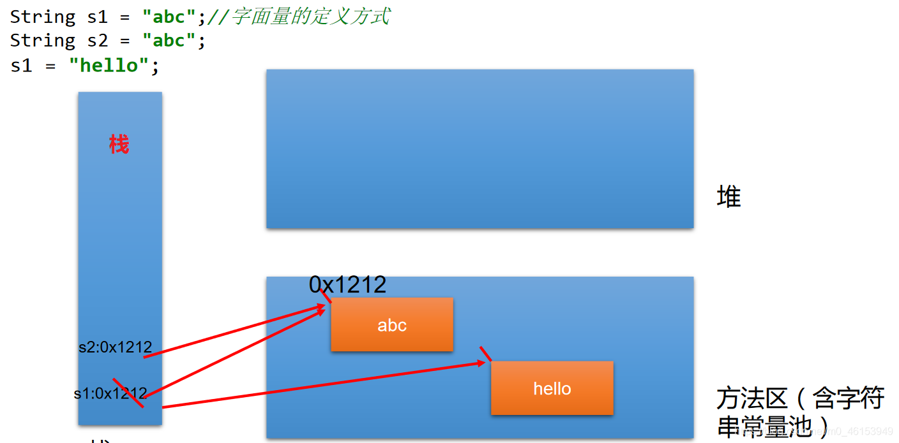
# 1.3、String 不同实例化方式的对比
1、String 对象的创建
String str = "hello"; | |
// 本质上 this.value = new char [0]; | |
String s1 = new String(); | |
//this.value = original.value; | |
String s2 = new String(String original); | |
//this.value = Arrays.copyOf(value, value.length); | |
String s3 = new String(char[] a); | |
String s4 = new String(char[] a,int startIndex,int count); |
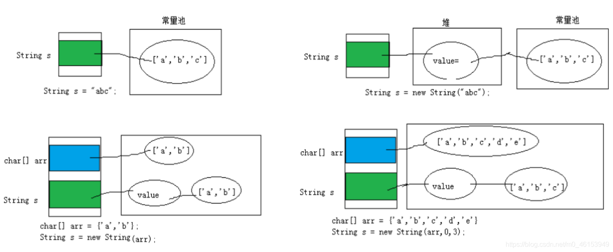
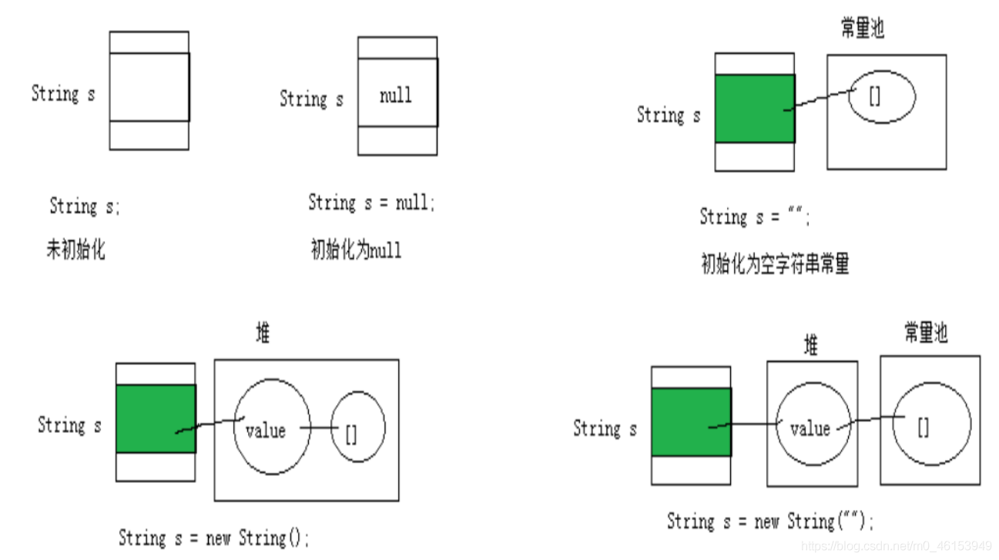
2、String str1 = “abc”; 与 String str2 = new String (“abc”); 的区别？
- 字符串常量存储在字符串常量池，目的是共享
- 字符串非常量对象存储在堆中。
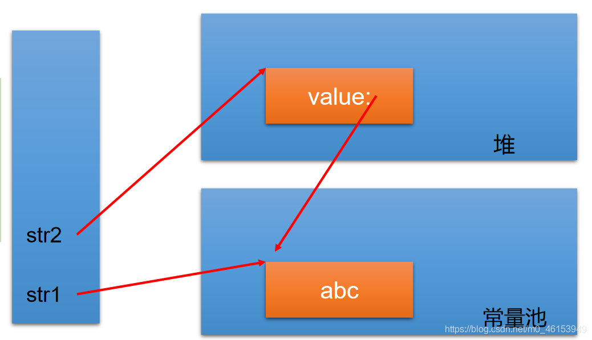
3、练习
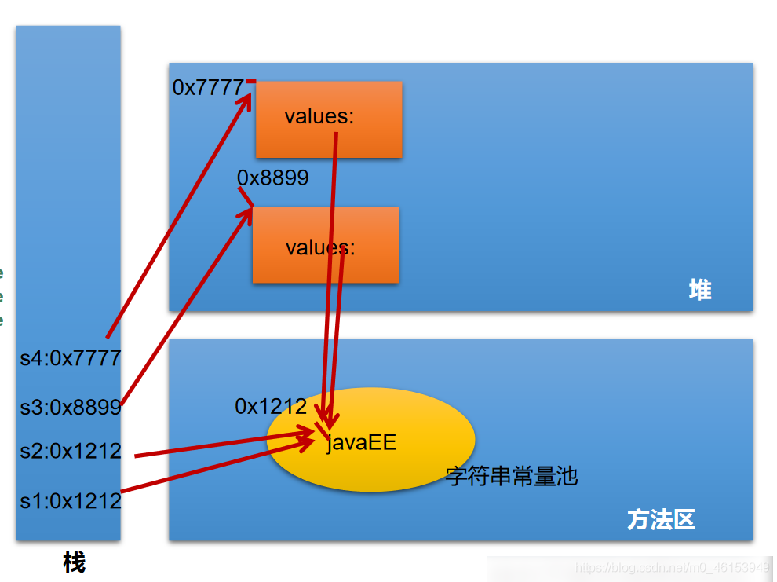
import org.junit.Test; | |
/** | |
* String 的使用 | |
*/ | |
public class StringTest { | |
/** | |
* String 的实例化方式 | |
* 方式一：通过字面量定义的方式 | |
* 方式二：通过 new + 构造器的方式 | |
* | |
* 面试题：String s = new String ("abc"); 方式创建对象，在内存中创建了几个对象？ | |
* 两个：一个是堆空间中 new 结构，另一个是 char [] 对应的常量池中的数据："abc" | |
* | |
*/ | |
@Test | |
public void test2(){ | |
// 通过字面量定义的方式：此时的 s1 和 s2 的数据 javaEE 声明在方法区中的字符串常量池中。 | |
String s1 = "javaEE"; | |
String s2 = "javaEE"; | |
// 通过 new + 构造器的方式：此时的 s3 和 s4 保存的地址值，是数据在堆空间中开辟空间以后对应的地址值。 | |
String s3 = new String("javaEE"); | |
String s4 = new String("javaEE"); | |
System.out.println(s1 == s2);//true | |
System.out.println(s1 == s3);//false | |
System.out.println(s1 == s4);//false | |
System.out.println(s3 == s4);//false | |
System.out.println("***********************"); | |
Person p1 = new Person("Tom",12); | |
Person p2 = new Person("Tom",12); | |
System.out.println(p1.name.equals(p2.name));//true | |
System.out.println(p1.name == p2.name);//true | |
p1.name = "Jerry"; | |
System.out.println(p2.name);//Tom | |
} | |
} |
Person 类
/** | |
* @author subei | |
* @create 2020-05-09 11:20 | |
*/ | |
public class Person { | |
String name; | |
int age; | |
public Person(String name, int age) { | |
this.name = name; | |
this.age = age; | |
} | |
public Person() { | |
} | |
} |
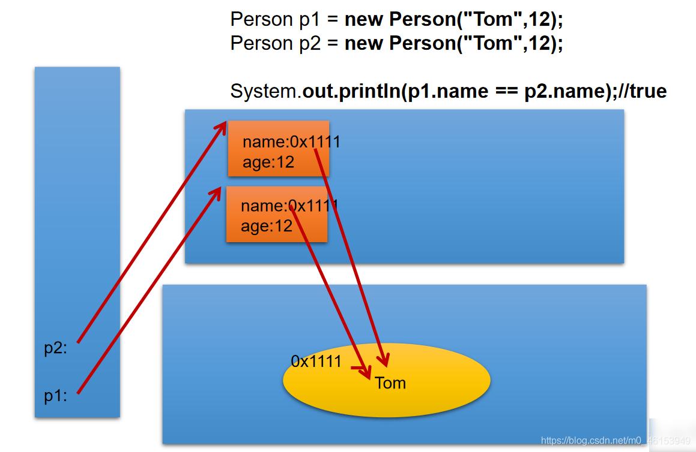
# 1.4、String 不同拼接操作的对比
import org.junit.Test; | |
/** | |
* String 的使用 | |
*/ | |
public class StringTest { | |
/** | |
* 结论 | |
* 1. 常量与常量的拼接结果在常量池。且常量池中不会存在相同内容的常量。 | |
* 2. 只要其中有一个是变量，结果就在堆中 | |
* 3. 如果拼接的结果调用 intern () 方法，返回值就在常量池中 | |
* | |
*/ | |
@Test | |
public void test4(){ | |
String s1 = "javaEEhadoop"; | |
String s2 = "javaEE"; | |
String s3 = s2 + "hadoop"; | |
System.out.println(s1 == s3);//false | |
final String s4 = "javaEE";//s4: 常量 | |
String s5 = s4 + "hadoop"; | |
System.out.println(s1 == s5);//true | |
} | |
@Test | |
public void test3(){ | |
String s1 = "javaEE"; | |
String s2 = "hadoop"; | |
String s3 = "javaEEhadoop"; | |
String s4 = "javaEE" + "hadoop"; | |
String s5 = s1 + "hadoop"; | |
String s6 = "javaEE" + s2; | |
String s7 = s1 + s2; | |
System.out.println(s3 == s4);//true | |
System.out.println(s3 == s5);//false | |
System.out.println(s3 == s6);//false | |
System.out.println(s5 == s6);//false | |
System.out.println(s3 == s7);//false | |
System.out.println(s5 == s6);//false | |
System.out.println(s5 == s7);//false | |
System.out.println(s6 == s7);//false | |
String s8 = s5.intern();// 返回值得到的 s8 使用的常量值中已经存在的 “javaEEhadoop” | |
System.out.println(s3 == s8);//true | |
} | |
} |
# 1.4.1、String 使用陷阱
1、
String s1 = “a”;
说明：在字符串常量池中创建了一个字面量为 "a" 的字符串。
2、
s1 = s1 + “b”;
说明：实际上原来的 “a” 字符串对象已经丢弃了，现在在堆空间中产生了一个字符串 s1+“b”（也就是 "ab")。如果多次执行这些改变串内容的操作，会导致大量副本字符串对象存留在内存中，降低效率。如果这样的操作放到循环中，会极大影响程序的性能。
3、
String s2 = “ab”;
说明：直接在字符串常量池中创建一个字面量为 "ab" 的字符串。
4、
String s3 = “a” + “b”;
说明：s3 指向字符串常量池中已经创建的 "ab" 的字符串。
5、
String s4 = s1.intern();
说明：堆空间的 s1 对象在调用 intern () 之后，会将常量池中已经存在的 "ab" 字符串赋值给 s4。
6、练习
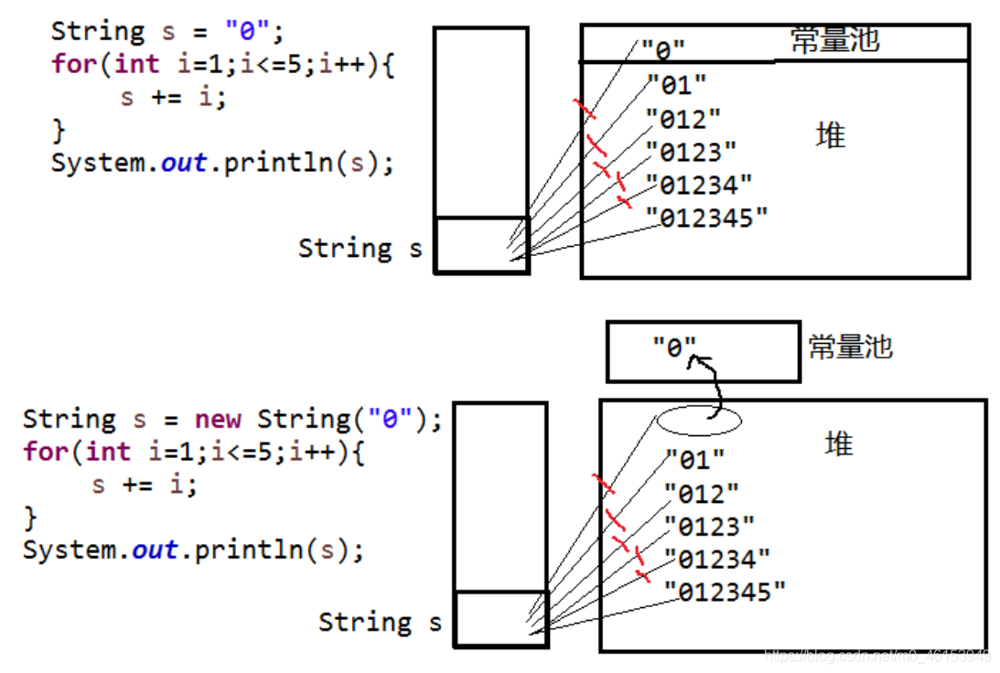
# 1.5、String 的一道面试题
/** | |
* 一道面试题 | |
*/ | |
public class StringTest { | |
String str = new String("good"); | |
char[] ch = { 't', 'e', 's', 't' }; | |
public void change(String str, char ch[]) { | |
str = "test ok"; | |
ch[0] = 'b'; | |
} | |
public static void main(String[] args) { | |
StringTest ex = new StringTest(); | |
ex.change(ex.str, ex.ch); | |
System.out.println(ex.str);//good | |
System.out.println(ex.ch);//best | |
} | |
} |
# 1.6、JVM 中涉及字符串的内存结构
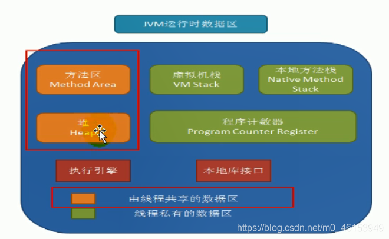
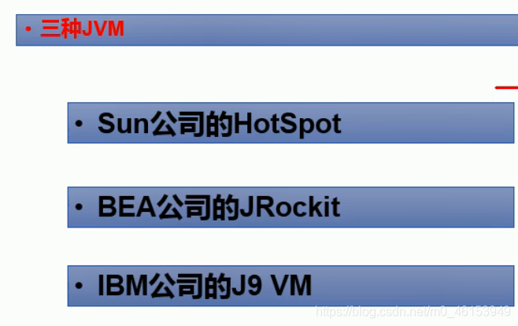
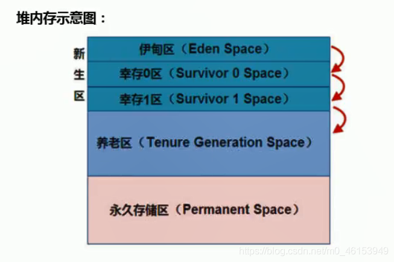
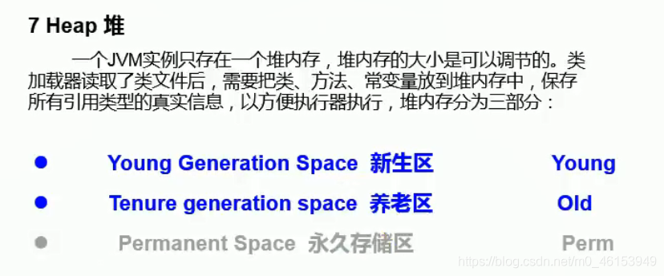
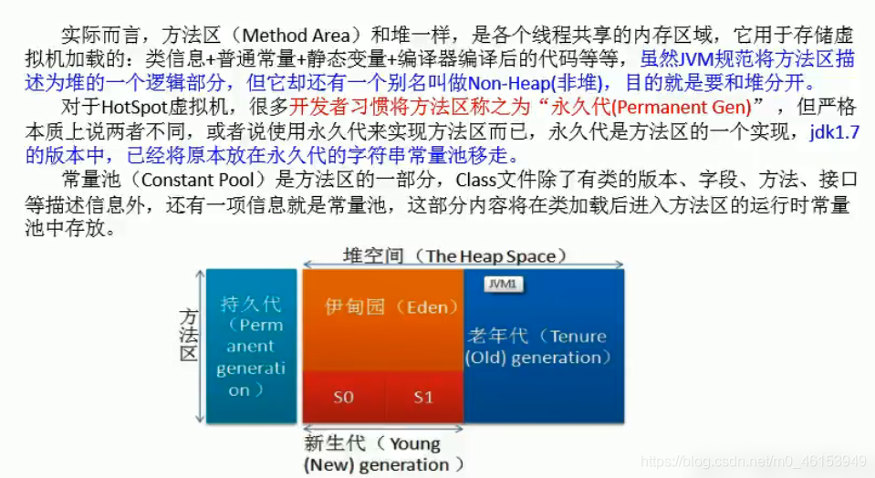
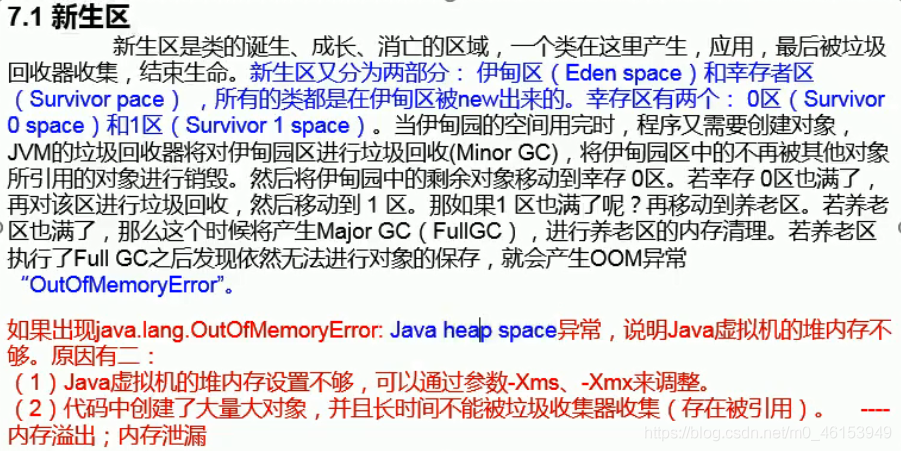
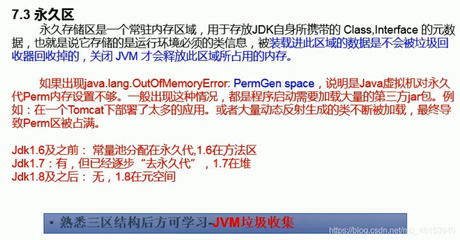
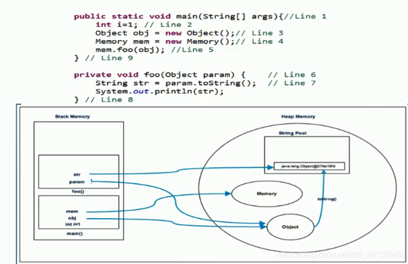
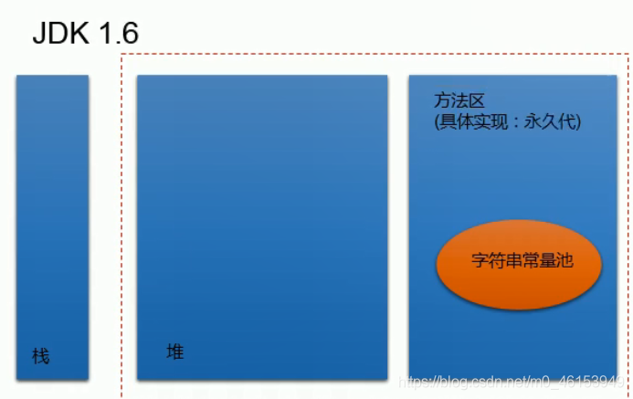
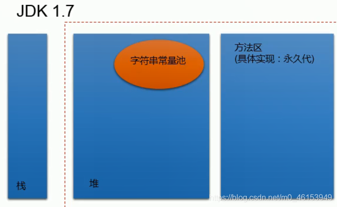
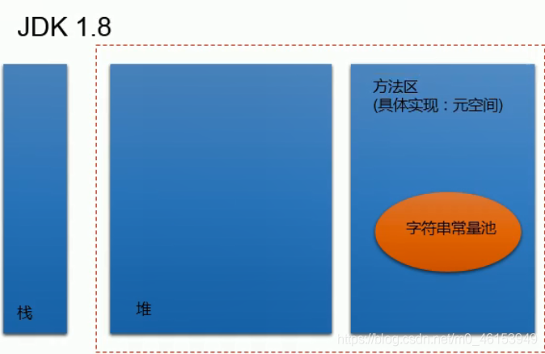
# 1.7、String 的常用方法 1
import org.junit.Test; | |
public class StringMethodTest { | |
/** | |
* int length ()：返回字符串的长度：return value.length | |
* char charAt (int index)：返回某索引处的字符 return value [index] | |
* boolean isEmpty ()：判断是否是空字符串：return value.length==0 | |
* String toLowerCase ()：使用默认语言环境，将 String 中的所有字符转换为小写 | |
* String toUpperCase ()：使用默认语言环境，将 String 中的所有字符转换为大写 | |
* String trim ()：返回字符串的副本，忽略前导空白和尾部空白 | |
* boolean equals (Object obj)：比较字符串的内容是否相同 | |
* boolean equals IgnoreCase (String anotherString)：与 equals 方法类似，忽略大小写 | |
* String concat (String str)：将指定字符串连接到此字符串的结尾。等价于用 “+” | |
* int compareTo (String anotherString)：比较两个字符串的大小 | |
* String substring (int beginIndex)：返回一个新的字符串，它是此字符串的从 beginIndex 开始截取到最后的一个子字符串。 | |
* String substring (int beginIndex,int endIndex)：返回一个新字符串，它是此字符串从 beginIndex 开始截取到 endIndex (不包含) 的一个子字符串。 | |
*/ | |
@Test | |
public void test2(){ | |
String s1 = "HelloWorld"; | |
String s2 = "helloworld"; | |
System.out.println(s1.equals(s2));//false | |
System.out.println(s1.equalsIgnoreCase(s2));//true | |
String s3 = "abc"; | |
String s4 = s3.concat("def"); | |
System.out.println(s4);//abcdef | |
String s5 = "abc"; | |
String s6 = new String("abe"); | |
System.out.println(s5.compareTo(s6));//-2 // 涉及到字符串的排序 | |
String s7 = "周围好吵啊"; | |
String s8 = s7.substring(2); | |
System.out.println(s7); | |
System.out.println(s8); | |
String s9 = s7.substring(0, 2); | |
System.out.println(s9); | |
} | |
@Test | |
public void Test1(){ | |
String s1 = "helloworld"; | |
System.out.println(s1.length()); | |
System.out.println(s1.length()); | |
System.out.println(s1.charAt(0)); | |
System.out.println(s1.charAt(9)); | |
// System.out.println(s1.charAt(10)); | |
// s1 = ""; | |
System.out.println(s1.isEmpty()); | |
String s2 = s1.toLowerCase(); | |
System.out.println(s1);//s1 不可变的，仍然为原来的字符串 | |
System.out.println(s2);// 改成小写以后的字符串 | |
String s3 = " he llo world "; | |
String s4 = s3.trim(); | |
System.out.println("-----" + s3 + "-----"); | |
System.out.println("-----" + s4 + "-----"); | |
} | |
} |
# 1.8、String 的常用方法 2
import org.junit.Test; | |
public class StringMethodTest { | |
/** | |
* boolean endsWith (String suffix)：测试此字符串是否以指定的后缀结束 | |
* boolean startsWith (String prefix)：测试此字符串是否以指定的前缀开始 | |
* boolean startsWith (String prefix, int toffset)：测试此字符串从指定索引开始的子字符串是否以指定前缀开始 | |
* | |
* boolean contains (CharSequence s)：当且仅当此字符串包含指定的 char 值序列时，返回 true | |
* int indexOf (String str)：返回指定子字符串在此字符串中第一次出现处的索引 | |
* int indexOf (String str, int fromIndex)：返回指定子字符串在此字符串中第一次出现处的索引，从指定的索引开始 | |
* int lastIndexOf (String str)：返回指定子字符串在此字符串中最右边出现处的索引 | |
* int lastIndexOf (String str, int fromIndex)：返回指定子字符串在此字符串中最后一次出现处的索引，从指定的索引开始反向搜索 | |
* | |
* 注：indexOf 和 lastIndexOf 方法如果未找到都是返回 - 1 | |
*/ | |
@Test | |
public void test3(){ | |
String str1 = "helloworld"; | |
boolean b1 = str1.endsWith("rld"); | |
System.out.println(b1); | |
boolean b2 = str1.startsWith("He"); | |
System.out.println(b2); | |
boolean b3 = str1.startsWith("ll",2); | |
System.out.println(b3); | |
String str2 = "wor"; | |
System.out.println(str1.contains(str2)); | |
System.out.println(str1.indexOf("lo")); | |
System.out.println(str1.indexOf("lo",5)); | |
String str3 = "hellorworld"; | |
System.out.println(str3.lastIndexOf("or")); | |
System.out.println(str3.lastIndexOf("or",6)); | |
// 什么情况下，indexOf (str) 和 lastIndexOf (str) 返回值相同？ | |
// 情况一：存在唯一的一个 str。情况二：不存在 str | |
} | |
} |
# 1.9、String 的常用方法 3
import org.junit.Test; | |
public class StringMethodTest { | |
/** | |
* 替换： | |
* String replace (char oldChar, char newChar)：返回一个新的字符串，它是通过用 newChar 替换此字符串中出现的所有 oldChar 得到的。 | |
* String replace (CharSequence target, CharSequence replacement)：使用指定的字面值替换序列替换此字符串所有匹配字面值目标序列的子字符串。 | |
* String replaceAll (String regex, String replacement)：使用给定的 replacement 替换此字符串所有匹配给定的正则表达式的子字符串。 | |
* String replaceFirst (String regex, String replacement)：使用给定的 replacement 替换此字符串匹配给定的正则表达式的第一个子字符串。 | |
* | |
* 匹配: | |
* boolean matches (String regex)：告知此字符串是否匹配给定的正则表达式。 | |
* | |
* 切片： | |
* String [] split (String regex)：根据给定正则表达式的匹配拆分此字符串。 | |
* String [] split (String regex, int limit)：根据匹配给定的正则表达式来拆分此字符串，最多不超过 limit 个，如果超过了，剩下的全部都放到最后一个元素中。 | |
* | |
*/ | |
@Test | |
public void test4(){ | |
String str1 = "西藏布达拉宫欢迎您"; | |
String str2 = str1.replace('西','东'); | |
System.out.println(str1); | |
System.out.println(str2); | |
String str3 = str1.replace("北京", "南京"); | |
System.out.println(str3); | |
System.out.println("*************************"); | |
String str = "12hello34world5java7891mysql456"; | |
// 把字符串中的数字替换成，，如果结果中开头和结尾有，的话去掉 | |
String string = str.replaceAll("\\d+", ",").replaceAll("^,|,$", ""); | |
System.out.println(string); | |
System.out.println("*************************"); | |
str = "12345"; | |
// 判断 str 字符串中是否全部有数字组成，即有 1-n 个数字组成 | |
boolean matches = str.matches("\\d+"); | |
System.out.println(matches); | |
String tel = "0571-4534289"; | |
// 判断这是否是一个杭州的固定电话 | |
boolean result = tel.matches("0571-\\d{7,8}"); | |
System.out.println(result); | |
System.out.println("*************************"); | |
str = "hello|world|java"; | |
String[] strs = str.split("\\|"); | |
for (int i = 0; i < strs.length; i++) { | |
System.out.println(strs[i]); | |
} | |
System.out.println(); | |
str2 = "hello.world.java"; | |
String[] strs2 = str2.split("\\."); | |
for (int i = 0; i < strs2.length; i++) { | |
System.out.println(strs2[i]); | |
} | |
} | |
} |
# 1.10、String 与基本数据类型包装类的转换
import org.junit.Test; | |
/** | |
* 涉及到 String 类与其他结构之间的转换 | |
*/ | |
public class StringTest1 { | |
/** | |
* 复习 | |
* String 与基本数据类型、包装类之间的转换 | |
* | |
* String --> 基本数据类型、包装类：调用包装类的静态方法：parseXxx (str) | |
* 基本数据类型、包装类 --> String: 调用 String 重载的 valueOf (xxx) | |
*/ | |
@Test | |
public void test1(){ | |
String str1 = "123"; | |
// int num = (int) str1;// 错误的 | |
int num = Integer.parseInt(str1); | |
String str2 = String.valueOf(num); //"123 | |
String str3 = num + ""; | |
System.out.println(str1 == str3); //false | |
} | |
} |
# 1.11、String 与 char [] 之间的转换
import org.junit.Test; | |
/** | |
* 涉及到 String 类与其他结构之间的转换 | |
*/ | |
public class StringTest1 { | |
/** | |
* String 与 char [] 之间的转换 | |
* | |
* String --> char []: 调用 String 的 toCharArray () | |
* char [] --> String: 调用 String 的构造器 | |
*/ | |
@Test | |
public void test2(){ | |
String str1 = "abc123"; // 题目： a21cb3 | |
char[] charArray = str1.toCharArray(); | |
for (int i = 0; i < charArray.length; i++) { | |
System.out.println(charArray[i]); | |
} | |
char[] arr = new char[]{ 'h','e','l','l','o'}; | |
String str2 = new String(arr); | |
System.out.println(str2); | |
} | |
} |
# 1.12、String 与 byte [] 之间的转换
import org.junit.Test; | |
import java.io.UnsupportedEncodingException; | |
import java.util.Arrays; | |
/** | |
* 涉及到 String 类与其他结构之间的转换 | |
*/ | |
public class StringTest1 { | |
/** | |
* String 与 byte [] 之间的转换 | |
* | |
* 编码：String --> byte []: 调用 String 的 getBytes () | |
* 解码：byte [] --> String: 调用 String 的构造器 | |
* | |
* 编码：字符串 --> 字节 (看得懂 ---> 看不懂的二进制数据) | |
* 解码：编码的逆过程，字节 --> 字符串 （看不懂的二进制数据 ---> 看得懂） | |
* | |
* 说明：解码时，要求解码使用的字符集必须与编码时使用的字符集一致，否则会出现乱码。 | |
* | |
*/ | |
@Test | |
public void test3() throws UnsupportedEncodingException { | |
String str1 = "abc123重工"; | |
byte[] bytes = str1.getBytes();// 使用默认的字符编码集，进行转换 | |
System.out.println(Arrays.toString(bytes)); | |
byte[] gbks = str1.getBytes("gbk");// 使用 gbk 字符集进行编码。 | |
System.out.println(Arrays.toString(gbks)); | |
System.out.println("*****************************"); | |
String str2 = new String(bytes);// 使用默认的字符集，进行解码。 | |
System.out.println(str2); | |
String str3 = new String(gbks); | |
System.out.println(str3);// 出现乱码。原因：编码集和解码集不一致！ | |
String str4 = new String(gbks,"gbk"); | |
System.out.println(str4);// 没有出现乱码。原因：编码集和解码集一致！ | |
} | |
} |
# 1.13、面试中 String 算法考查的说明
1、模拟一个 trim 方法，去除字符串两端的空格。
import org.junit.Test; | |
/* | |
* 1. 模拟一个 trim 方法，去除字符串两端的空格。 | |
* | |
*/ | |
public class StringExer { | |
// 第 1 题 | |
public String myTrim(String str) { | |
if (str != null) { | |
int start = 0;// 用于记录从前往后首次索引位置不是空格的位置的索引 | |
int end = str.length() - 1;// 用于记录从后往前首次索引位置不是空格的位置的索引 | |
while (start < end && str.charAt(start) == ' ') { | |
start++; | |
} | |
while (start < end && str.charAt(end) == ' ') { | |
end--; | |
} | |
if (str.charAt(start) == ' ') { | |
return ""; | |
} | |
return str.substring(start, end + 1); | |
} | |
return null; | |
} | |
@Test | |
public void testMyTrim() { | |
String str = " a "; | |
// str = " "; | |
String newStr = myTrim(str); | |
System.out.println("---" + newStr + "---"); | |
} | |
} |
2、将一个字符串进行反转。将字符串中指定部分进行反转。比如 “abcdefg” 反转为”abfedcg”
import org.junit.Test; | |
public class StringDemo { | |
/** | |
* 将一个字符串进行反转。将字符串中指定部分进行反转。比如 “abcdefg” 反转为”abfedcg” | |
* | |
* 方式一：转换为 char [] | |
*/ | |
public String reverse(String str,int startIndex,int endIndex){ | |
if(str != null && str.length() != 0) { | |
char[] arr = str.toCharArray(); | |
for (int x = startIndex, y = endIndex; x < y; x++, y--) { | |
char temp = arr[x]; | |
arr[x] = arr[y]; | |
arr[y] = temp; | |
} | |
return new String(arr); | |
} | |
return null; | |
} | |
/** | |
* 方式二：使用 String 的拼接 | |
*/ | |
public String reverse2(String str, int startIndex, int endIndex) { | |
if(str != null) { | |
// 第一部分 | |
String reverStr = str.substring(0,startIndex);// ab | |
// 第二部分 | |
for (int i = endIndex; i >= startIndex; i--) { | |
reverStr += str.charAt(i); | |
} // abfedc | |
// 第三部分 | |
reverStr += str.substring(endIndex + 1); | |
return reverStr; | |
} | |
return null; | |
} | |
// 方式三：使用 StringBuffer/StringBuilder 替换 String | |
public String reverse3(String str, int startIndex, int endIndex) { | |
StringBuilder builder = new StringBuilder(str.length()); | |
if(str != null) { | |
// 第一部分 | |
builder.append(str.substring(0, startIndex)); | |
// 第二部分 | |
for (int i = endIndex; i >= startIndex; i--) { | |
builder.append(str.charAt(i)); | |
} | |
// 第三部分 | |
builder.append(str.substring(endIndex + 1)); | |
return builder.toString(); | |
} | |
return null; | |
} | |
@Test | |
public void testReverse() { | |
String str = "abcdefg"; | |
String str1 = reverse3(str, 2, 5); | |
System.out.println(str1);// abfedcg | |
} | |
} |
3、获取一个字符串在另一个字符串中出现的次数。比如：获取 “ab” 在 “abkkcadkabkebfkabkskab” 中出现的次数
import org.junit.Test; | |
public class StringDemo2 { | |
/** | |
* 获取一个字符串在另一个字符串中出现的次数。 | |
* 比如：获取 “ab” 在 “abkkcadkabkebfkabkskab” 中出现的次数 | |
* | |
*/ | |
/** | |
* 获取 subStr 在 mainStr 中出现的次数 | |
* @param mainStr | |
* @param subStr | |
*/ | |
public int getCount(String mainStr,String subStr){ | |
int mainLength = mainStr.length(); | |
int subLength = subStr.length(); | |
int count = 0; | |
int index = 0; | |
if(mainLength >= subLength){ | |
// 方式一： | |
// while((index = mainStr.indexOf(subStr)) != -1){ | |
// count++; | |
// mainStr = mainStr.substring(index + subStr.length()); | |
// } | |
// 方式二：对方式一的改进 | |
while((index = mainStr.indexOf(subStr,index)) != -1){ | |
count++; | |
index += subLength; | |
} | |
return count; | |
}else{ | |
return 0; | |
} | |
} | |
@Test | |
public void testGetCount(){ | |
String mainStr = "abkkcadkabkebfkabkskab"; | |
String subStr = "ab"; | |
int count = getCount(mainStr,subStr); | |
System.out.println(count); | |
} | |
} |
4、获取两个字符串中最大相同子串。比如：
str1 = "abcwerthelloyuiodef“;str2 = “cvhellobnm”提示：将短的那个串进行长度依次递减的子串与较长的串比较。
import org.junit.Test; | |
import java.util.Arrays; | |
public class StringDemo3 { | |
/** | |
* 获取两个字符串中最大相同子串。比如： | |
* str1 = "abcwerthelloyuiodef“;str2 ="cvhellobnm" | |
* 提示：将短的那个串进行长度依次递减的子串与较长的串比较。 | |
*/ | |
// 前提：两个字符串中只有一个最大相同子串 | |
public String getMaxSameString(String str1,String str2){ | |
if(str1 != null && str2 != null){ | |
String maxStr = (str1.length() >= str2.length())? str1 : str2; | |
String minStr = (str1.length() < str2.length())? str1 : str2; | |
int length = minStr.length(); | |
for(int i = 0;i < length;i++){ | |
for(int x = 0,y = length - i;y <= length;x++,y++){ | |
String subStr = minStr.substring(x,y); | |
if(maxStr.contains(subStr)){ | |
return subStr; | |
} | |
} | |
} | |
} | |
return null; | |
} | |
// 如果存在多个长度相同的最大相同子串 | |
// 此时先返回 String []，后面可以用集合中的 ArrayList 替换，较方便 | |
public String[] getMaxSameString1(String str1, String str2) { | |
if (str1 != null && str2 != null) { | |
StringBuffer sBuffer = new StringBuffer(); | |
String maxString = (str1.length() > str2.length()) ? str1 : str2; | |
String minString = (str1.length() > str2.length()) ? str2 : str1; | |
int len = minString.length(); | |
for (int i = 0; i < len; i++) { | |
for (int x = 0, y = len - i; y <= len; x++, y++) { | |
String subString = minString.substring(x, y); | |
if (maxString.contains(subString)) { | |
sBuffer.append(subString + ","); | |
} | |
} | |
// System.out.println(sBuffer); | |
if (sBuffer.length() != 0) { | |
break; | |
} | |
} | |
String[] split = sBuffer.toString().replaceAll(",$", "").split("\\,"); | |
return split; | |
} | |
return null; | |
} | |
@Test | |
public void testGetMaxSameString(){ | |
String str1 = "abcwerthello1yuiodefabcdef"; | |
String str2 = "cvhello1bnmabcdef"; | |
String[] maxSameStrings = getMaxSameString1(str1, str2); | |
System.out.println(Arrays.toString(maxSameStrings)); | |
} | |
} |
5、对字符串中字符进行自然顺序排序。 提示： 1）字符串变成字符数组。 2）对数组排序，选择，冒泡，Arrays.sort (); 3）将排序后的数组变成字符串。
import org.junit.Test; | |
import java.util.Arrays; | |
/** | |
* | |
* 5. 对字符串中字符进行自然顺序排序。"abcwerthelloyuiodef" | |
* 提示： | |
* 1）字符串变成字符数组。 | |
* 2）对数组排序，选择，冒泡，Arrays.sort (str.toCharArray ()); | |
* 3）将排序后的数组变成字符串。 | |
* | |
*/ | |
public class StringDemo4 { | |
// 第 5 题 | |
@Test | |
public void testSort() { | |
String str = "abcwerthelloyuiodef"; | |
char[] arr = str.toCharArray(); | |
Arrays.sort(arr); | |
String newStr = new String(arr); | |
System.out.println(newStr); | |
} | |
} |
# 1.14、StringBuffer 和 StringBuilder 的介绍
/** | |
* String、StringBuffer、StringBuilder 三者的异同？ | |
* | |
* String: 不可变的字符序列；底层使用 char [] 存储，使用 final 修饰 | |
* StringBuffer: 可变的字符序列；线程安全的，效率低；底层使用 char [] 存储，没有用 final 修饰 | |
* StringBuilder: 可变的字符序列；jdk5.0 新增的，线程不安全的，效率高；底层使用 char [] 存储 | |
* | |
* 细说： | |
*** 从可变性来说 **，String 底层呢其实就是个 char 数组，使用 final 修饰了，所以是不可变的， | |
*StringBuilder 与 StringBuffer 是可变的字符串 | |
*** 从安全上来说 **，String 中的对象是不可变的，也就可以理解为常量，线程安全。StringBuffer 对方法加 | |
* 了同步锁或者对调用的方法加了同步锁，所以是线程安全的。StringBuilder 并没有对方法进行加同步 | |
* 锁，所以是不线程安全的。 | |
* 从性能上来说，每次对 String 类型进行改变的时候，都会生成一个新的 String 对象，然后将指针指向 | |
* 新的 String 对象。StringBuffer 每次都会对 StringBuffer 对象本身进行操作，而不是生成新的对象并改 | |
* 变对象引用。StirngBuilder 的效率会高一些，而 StringBuffer 的底层加了同步的关键字，性能会有所下 | |
* 降 | |
*/ |
# 1.15、StringBuffer 的源码分析
import org.junit.Test; | |
/** | |
* 关于 StringBuffer 和 StringBuilder 的使用 | |
*/ | |
public class StringBufferBuilderTest { | |
/** | |
* | |
* 源码分析： | |
* String str = new String ();//char [] value = new char [0]; | |
* String str1 = new String ("abc");//char [] value = new char []{'a','b','c'}; | |
* | |
* StringBuffer sb1 = new StringBuffer ();//char [] value = new char [16]; 底层创建了一个长度是 16 的数组。 | |
* System.out.println (sb1.length ());// | |
* sb1.append ('a');//value [0] = 'a'; | |
* sb1.append ('b');//value [1] = 'b'; | |
* | |
* StringBuffer sb2 = new StringBuffer ("abc");//char [] value = new char ["abc".length () + 16]; | |
* | |
* // 问题 1.System.out.println (sb2.length ());//3 | |
* // 问题 2. 扩容问题：如果要添加的数据底层数组盛不下了，那就需要扩容底层的数组。 | |
* 默认情况下，扩容为原来容量的 2 倍 + 2，同时将原有数组中的元素复制到新的数组中。 | |
* | |
* 意义：开发中建议大家使用：StringBuffer (int capacity) 或 StringBuilder (int capacity) | |
* | |
*/ | |
@Test | |
public void test1(){ | |
StringBuffer sb1 = new StringBuffer("abc"); | |
sb1.setCharAt(0,'m'); | |
System.out.println(sb1); | |
StringBuffer sb2 = new StringBuffer(); | |
System.out.println(sb2.length()); //0 | |
} | |
} |
# 1.16、StringBuffer 中的常用方法
import org.junit.Test; | |
/** | |
* 关于 StringBuffer 和 StringBuilder 的使用 | |
*/ | |
public class StringBufferBuilderTest { | |
/** | |
* StringBuffer 的常用方法： | |
* | |
* StringBuffer append (xxx)：提供了很多的 append () 方法，用于进行字符串拼接 | |
* StringBuffer delete (int start,int end)：删除指定位置的内容 | |
* StringBuffer replace (int start, int end, String str)：把 [start,end) 位置替换为 str | |
* StringBuffer insert (int offset, xxx)：在指定位置插入 xxx | |
* StringBuffer reverse () ：把当前字符序列逆转 | |
* public int indexOf (String str) | |
* public String substring (int start,int end): 返回一个从 start 开始到 end 索引结束的左闭右开区间的子字符串 | |
* public int length () | |
* public char charAt (int n ) | |
* public void setCharAt (int n ,char ch) | |
* | |
* 总结： | |
* 增：append (xxx) | |
* 删：delete (int start,int end) | |
* 改：setCharAt (int n ,char ch) /replace (int start, int end, String str) | |
* 查：charAt (int n ) | |
* 插：insert (int offset, xxx) | |
* 长度：length (); | |
* 遍历：for () + charAt () /toString () | |
* | |
*/ | |
@Test | |
public void test2(){ | |
StringBuffer s1 = new StringBuffer("abc"); | |
s1.append(1); | |
s1.append('1'); | |
System.out.println(s1); | |
// s1.delete(2,4); | |
// s1.replace(2,4,"hello"); | |
// s1.insert(2,false); | |
// s1.reverse(); | |
String s2 = s1.substring(1,3); | |
System.out.println(s1); | |
System.out.println(s1.length()); | |
System.out.println(s2); | |
} | |
} |
# 1.17、String、StringBuffer、StringBuilder 效率对比
import org.junit.Test; | |
/** | |
* 关于 StringBuffer 和 StringBuilder 的使用 | |
*/ | |
public class StringBufferBuilderTest { | |
/** | |
* 对比 String、StringBuffer、StringBuilder 三者的效率： | |
* 从高到低排列：StringBuilder > StringBuffer > String | |
* | |
*/ | |
@Test | |
public void test3(){ | |
// 初始设置 | |
long startTime = 0L; | |
long endTime = 0L; | |
String text = ""; | |
StringBuffer buffer = new StringBuffer(""); | |
StringBuilder builder = new StringBuilder(""); | |
// 开始对比 | |
startTime = System.currentTimeMillis(); | |
for (int i = 0; i < 20000; i++) { | |
buffer.append(String.valueOf(i)); | |
} | |
endTime = System.currentTimeMillis(); | |
System.out.println("StringBuffer的执行时间：" + (endTime - startTime)); | |
startTime = System.currentTimeMillis(); | |
for (int i = 0; i < 20000; i++) { | |
builder.append(String.valueOf(i)); | |
} | |
endTime = System.currentTimeMillis(); | |
System.out.println("StringBuilder的执行时间：" + (endTime - startTime)); | |
startTime = System.currentTimeMillis(); | |
for (int i = 0; i < 20000; i++) { | |
text = text + i; | |
} | |
endTime = System.currentTimeMillis(); | |
System.out.println("String的执行时间：" + (endTime - startTime)); | |
} | |
} |
# 02、JDK 8 之前的日期时间 API
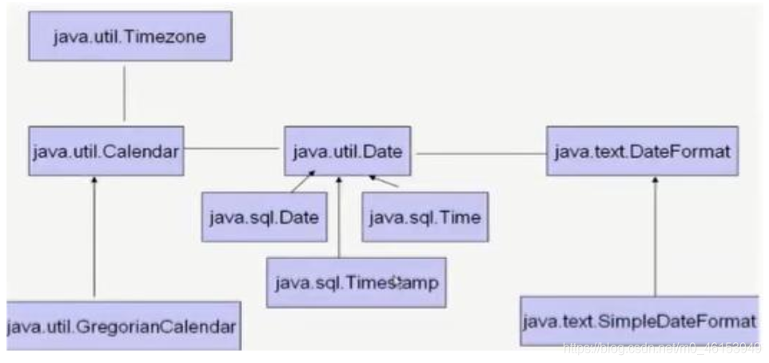
# 2.1、System 类中获取时间戳的方法
System类提供的public static long currentTimeMillis()用来返回当前时间与 1970 年 1 月 1 日 0 时 0 分 0 秒之间以毫秒为单位的时间差。
- 此方法适于计算时间差。
- 计算世界时间的主要标准有：
- UTC(Coordinated Universal Time)
- GMT(Greenwich Mean Time)
- CST(Central Standard Time)
import org.junit.Test; | |
/** | |
* JDK 8 之前日期和时间的 API 测试 | |
*/ | |
public class DateTimeTest { | |
//1.System 类中的 currentTimeMillis () | |
@Test | |
public void test1(){ | |
long time = System.currentTimeMillis(); | |
// 返回当前时间与 1970 年 1 月 1 日 0 时 0 分 0 秒之间以毫秒为单位的时间差。 | |
// 称为时间戳 | |
System.out.println(time); | |
} | |
} |
# 2.2、Java 中两个 Date 类的使用
import org.junit.Test; | |
import java.util.Date; | |
/** | |
* JDK 8 之前日期和时间的 API 测试 | |
*/ | |
public class DateTimeTest { | |
/** | |
* java.util.Date 类 ---> 表示特定的瞬间，精确到毫秒 | |
* |---java.sql.Date 类 | |
* | |
* 1. 两个构造器的使用 | |
* > 构造器一：Date ()：创建一个对应当前时间的 Date 对象 | |
* > 构造器二：创建指定毫秒数的 Date 对象 | |
* 2. 两个方法的使用 | |
* >toString (): 显示当前的年、月、日、时、分、秒 | |
* >getTime (): 获取当前 Date 对象对应的毫秒数。（时间戳） | |
* | |
* 3. java.sql.Date 对应着数据库中的日期类型的变量 | |
* > 如何实例化 | |
* > 如何将 java.util.Date 对象转换为 java.sql.Date 对象 | |
* | |
*/ | |
@Test | |
public void test2(){ | |
// 构造器一：Date ()：创建一个对应当前时间的 Date 对象 | |
Date date1 = new Date(); | |
System.out.println(date1.toString()); //Sat May 09 20:09:11 CST 2020 | |
System.out.println(date1.getTime()); //1589026216998 | |
// 构造器二：创建指定毫秒数的 Date 对象 | |
Date date2 = new Date(1589026216998L); | |
System.out.println(date2.toString()); | |
// 创建 java.sql.Date 对象 | |
java.sql.Date date3 = new java.sql.Date(35235325345L); | |
System.out.println(date3); //1971-02-13 | |
// 如何将 java.util.Date 对象转换为 java.sql.Date 对象 | |
// 情况一： | |
// Date date4 = new java.sql.Date(2343243242323L); | |
// java.sql.Date date5 = (java.sql.Date) date4; | |
// 情况二： | |
Date date6 = new Date(); | |
java.sql.Date date7 = new java.sql.Date(date6.getTime()); | |
} | |
} |
# 03、JDK 8 之前的日期时间 API
# 3.1、SimpleDateFormat 的使用
Date类的 API 不易于国际化，大部分被废弃了，java.text.SimpleDateFormat类是一个不与语言环境有关的方式来格式化和解析日期的具体类。- 它允许进行
- 格式化：日期 —> 文本
- 解析：文本 —> 日期
import org.junit.Test; | |
import java.text.ParseException; | |
import java.text.SimpleDateFormat; | |
import java.util.Date; | |
/** | |
* jdk 8 之前的日期时间的 API 测试 | |
* 1.System 类中 currentTimeMillis (); | |
* 2.java.util.Date 和字类 java.sql.Date | |
* 3.SimpleDateFormat | |
* 4.Calendar | |
*/ | |
public class DateTime { | |
/** | |
* SimpleDateFormat 的使用：SimpleDateFormat 对日期 Date 类的格式化和解析 | |
* 1. 两个操作 | |
* 1.1 格式化：日期 ---》字符串 | |
* 1.2 解析：格式化的逆过程，字符串 ---》日期 | |
* | |
* 2.SimpleDateFormat 的实例化 | |
*/ | |
@Test | |
public void testSimpleDateFormat() throws ParseException { | |
// 实例化 SimpleDateFormat | |
SimpleDateFormat sdf = new SimpleDateFormat(); | |
// 格式化：日期 ---》字符串 | |
Date date = new Date(); | |
System.out.println(date); //Sun May 10 16:34:30 CST 2020 | |
String format = sdf.format(date); | |
System.out.println(format); //20-5-10 下午 4:34 | |
// 解析：格式化的逆过程，字符串 ---》日期 | |
String str = "19-12-18 上午11:43"; | |
Date date1 = sdf.parse(str); | |
System.out.println(date1); //Wed Dec 18 11:43:00 CST 2019 | |
//************* 按照指定的方式格式化和解析：调用带参的构造器 ***************** | |
// SimpleDateFormat sdf1 = new SimpleDateFormat("yyyyy.MMMMM.dd GGG hh:mm aaa"); | |
SimpleDateFormat sdf1 = new SimpleDateFormat("yyyyy.MMMMM.dd GGG hh:mm aaa"); | |
// 格式化 | |
String format1 = sdf1.format(date); | |
System.out.println(format1); //02020. 五月.10 公元 04:32 下午 | |
// 解析：要求字符串必须是符合 SimpleDateFormat 识别的格式 (通过构造器参数体现), | |
// 否则，抛异常 | |
Date date2 = sdf1.parse("02020.五月.10 公元 04:32 下午"); | |
System.out.println(date2); //Sun May 10 16:32:00 CST 2020 | |
} | |
} |
# 3.2、SimpleDateFormat 的练习
1、练习 1
import org.junit.Test; | |
import java.text.ParseException; | |
import java.text.SimpleDateFormat; | |
import java.util.Date; | |
/** | |
* jdk 8 之前的日期时间的 API 测试 | |
* 1.System 类中 currentTimeMillis (); | |
* 2.java.util.Date 和字类 java.sql.Date | |
* 3.SimpleDateFormat | |
* 4.Calendar | |
*/ | |
public class DateTime { | |
/** | |
* 练习 1：字符串 "2020-09-08" 转换为 java.sql.Date | |
* | |
*/ | |
@Test | |
public void testExer() throws ParseException { | |
String birth = "2020-09-08"; | |
SimpleDateFormat sdf1 = new SimpleDateFormat("yyyy-MM-dd"); | |
Date date = sdf1.parse(birth); | |
// System.out.println(date); | |
java.sql.Date birthDate = new java.sql.Date(date.getTime()); | |
System.out.println(birthDate); | |
} | |
} |
2、练习 2
/** | |
* 练习二："三天打渔两天晒网" 1990-01-01 xxxx-xx-xx 打渔？晒网？ | |
* | |
* 举例：2020-09-08 ？ 总天数 | |
* | |
* 总天数 % 5 == 1,2,3 : 打渔 | |
* 总天数 % 5 == 4,0 : 晒网 | |
* | |
* 总天数的计算？ | |
* 方式一：(date2.getTime () - date1.getTime ()) / (1000 * 60 * 60 * 24) + 1 | |
* 方式二：1990-01-01 --> 2019-12-31 + 2020-01-01 -->2020-09-08 | |
* | |
*/ |
# 3.3、Calendar 日历类的使用
Calendar是一个抽象基类，主用用于完成日期字段之间相互操作的功能。获取
Calendar实例的方法- 使用
Calendar.getInstance()方法 - 调用它的子类
GregorianCalendar的构造器。
- 使用
一个 Calendar 的实例是系统时间的抽象表示，通过
get(intfield)方法来取得想要的时间信息。比如YEAR、MONTH、DAY_OF_WEEK、HOUR_OF_DAY 、MINUTE、SECONDpublic void set(intfield,intvalue)public void add(intfield,intamount)public final Date getTime()public final void setTime(Date date)
注意:
- 获取月份时：一月是 0，二月是 1，以此类推，12 月是 11
- 获取星期时：周日是 1，周二是 2，。。。。周六是 7
import java.util.Calendar; | |
import java.util.Date; | |
import org.junit.Test; | |
/** | |
* jdk 8 之前的日期时间的 API 测试 | |
* 1.System 类中 currentTimeMillis (); | |
* 2.java.util.Date 和字类 java.sql.Date | |
* 3.SimpleDateFormat | |
* 4.Calendar | |
*/ | |
public class DateTime { | |
/** | |
* Calendar 日历类的使用 | |
*/ | |
@Test | |
public void testCalendar(){ | |
//1. 实例化 | |
// 方式一：创建其子类（GregorianCalendar）的对象 | |
// 方式二：调用其静态方法 getInstance () | |
Calendar calendar = Calendar.getInstance(); | |
// System.out.println(calendar.getClass()); //class java.util.GregorianCalendar | |
//2. 常用方法 | |
//get() | |
int days = calendar.get(Calendar.DAY_OF_MONTH); | |
System.out.println(days); //10 | |
System.out.println(calendar.get(Calendar.DAY_OF_YEAR)); //131, 今天是这一年的 131 天 | |
//set() | |
//calendar 可变性 | |
calendar.set(Calendar.DAY_OF_MONTH,22); | |
days = calendar.get(Calendar.DAY_OF_MONTH); | |
System.out.println(days); //22 | |
//add() | |
calendar.add(Calendar.DAY_OF_MONTH,-3); | |
days = calendar.get(Calendar.DAY_OF_MONTH); | |
System.out.println(days); //22-3 --》19 | |
//getTime (): 日历类 ---> Date | |
Date date = calendar.getTime(); | |
System.out.println(date); //Tue May 19 17:12:06 CST 2020 | |
//setTime ():Date ---> 日历类 | |
Date date1 = new Date(); | |
calendar.setTime(date1); | |
days = calendar.get(Calendar.DAY_OF_MONTH); | |
System.out.println(days); //10 | |
} | |
} |
# 04、JDK8 中日期时间 API 的介绍
1、新日期时间 API 出现的背景
如果我们可以跟别人说：“我们在 1502643933071 见面，别晚了！” 那么就再简单不过了。但是我们希望时间与昼夜和四季有关，于是事情就变复杂了。JDK 1.0 中包含了一个 java.util.Date 类，但是它的大多数方法已经在 JDK 1.1 引入 Calendar 类之后被弃用了。而 Calendar 并不比 Date 好多少。它们面临的问题是：
- 可变性：像日期和时间这样的类应该是不可变的。
- 偏移性：Date 中的年份是从 1900 开始的，而月份都从 0 开始。
- 格式化：格式化只对 Date 有用，Calendar 则不行。
- 此外，它们也不是线程安全的；不能处理闰秒等。
import org.junit.Test; | |
import java.util.Date; | |
/** | |
* jdk 8 中日期时间 API 的测试 | |
* | |
*/ | |
public class JDK8DateTimeTest { | |
@Test | |
public void testDate(){ | |
// 偏移量 | |
Date date1 = new Date(2020,9,8); | |
System.out.println(date1); //Fri Oct 08 00:00:00 CST 3920 | |
Date date2 = new Date(2020 - 1900,9 - 1,8); | |
System.out.println(date2); //Tue Sep 08 00:00:00 CST 2020 | |
} | |
} |
第三次引入的 API 是成功的，并且 Java 8 中引入的 java.time API 已经纠正了过去的缺陷，将来很长一段时间内它都会为我们服务。
Java 8 吸收了 Joda-Time 的精华，以一个新的开始为 Java 创建优秀的 API。新的 java.time 中包含了所有关于 本地日期（LocalDate）、本地时间（LocalTime）、本地日期时间（LocalDateTime）、时区（ZonedDateTime）和持续时间（Duration）的类 。历史悠久的 Date 类新增了 toInstant() 方法，用于把 Date 转换成新的表示形式。这些新增的本地化时间日期 API 大大简化了日期时间和本地化的管理。
java.time–包含值对象的基础包 | |
java.time.chrono–提供对不同的日历系统的访问java.time.format–格式化和解析时间和日期java.time.temporal–包括底层框架和扩展特性java.time.zone–包含时区支持的类 | |
说明：大多数开发者只会用到基础包和format包，也可能会用到temporal包。因此，尽管有68个新的公开类型，大多数开发者，大概将只会用到其中的三分之一。 |
# 4.1、LocalDate、LocalTime、LocalDateTime 的使用
LocalDate、LocalTime、LocalDateTime类是其中较重要的几个类，它们的实例是
不可变的对象
，分别表示使用 ISO-8601 日历系统的日期、时间、日期和时间。它们提供了简单的本地日期或时间，并不包含当前的时间信息，也不包含与时区相关的信息。
LocalDate代表 IOS 格式（yyyy-MM-dd）的日期，可以存储生日、纪念日等日期。LocalTime表示一个时间，而不是日期。LocalDateTime是用来表示日期和时间的， 这是一个最常用的类之一 。
注：ISO-8601 日历系统是国际标准化组织制定的现代公民的日期和时间的表示法，也就是公历。
import org.junit.Test; | |
import java.time.LocalDate; | |
import java.time.LocalDateTime; | |
import java.time.LocalTime; | |
/** | |
* jdk 8 中日期时间 API 的测试 | |
*/ | |
public class JDK8DateTimeTest { | |
/** | |
* LocalDate、LocalTime、LocalDateTime 的使用 | |
* | |
*/ | |
@Test | |
public void test1(){ | |
//now (): 获取当前的日期、时间、日期 + 时间 | |
LocalDate localDate = LocalDate.now(); | |
LocalTime localTime = LocalTime.now(); | |
LocalDateTime localDateTime = LocalDateTime.now(); | |
System.out.println(localDate); | |
System.out.println(localTime); | |
System.out.println(localDateTime); | |
//of (): 设置指定的年、月、日、时、分、秒。没有偏移量 | |
LocalDateTime localDateTime1 = LocalDateTime.of(2020, 10, 6, 13, 23, 43); | |
System.out.println(localDateTime1); | |
//getXxx ()：获取相关的属性 | |
System.out.println(localDateTime.getDayOfMonth()); | |
System.out.println(localDateTime.getDayOfWeek()); | |
System.out.println(localDateTime.getMonth()); | |
System.out.println(localDateTime.getMonthValue()); | |
System.out.println(localDateTime.getMinute()); | |
// 体现不可变性 | |
//withXxx (): 设置相关的属性 | |
LocalDate localDate1 = localDate.withDayOfMonth(22); | |
System.out.println(localDate); | |
System.out.println(localDate1); | |
LocalDateTime localDateTime2 = localDateTime.withHour(4); | |
System.out.println(localDateTime); | |
System.out.println(localDateTime2); | |
// 不可变性 | |
LocalDateTime localDateTime3 = localDateTime.plusMonths(3); | |
System.out.println(localDateTime); | |
System.out.println(localDateTime3); | |
LocalDateTime localDateTime4 = localDateTime.minusDays(6); | |
System.out.println(localDateTime); | |
System.out.println(localDateTime4); | |
} | |
} |
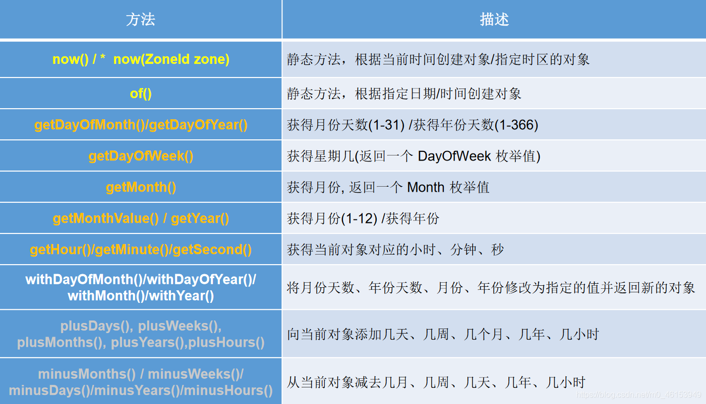
# 4.2、Instant 类的使用
Instant：时间线上的一个瞬时点。这可能被用来记录应用程序中的事件时间戳。- 在处理时间和日期的时候，我们通常会想到年，月，日，时，分，秒。然而，这只是时间的一个模型，是面向人类的。第二种通用模型是面向机器的，或者说是连续的。在此模型中，时间线中的一个点表示为一个很大的数，这有利于计算机处理。在 UNIX 中，这个数从 1970 年开始，以秒为的单位；同样的，在 Java 中，也是从 1970 年开始，但以毫秒为单位。
java.time包通过值类型Instant 提供机器视图，不提供处理人类意义上的时间单位。Instant表示时间线上的一点，而不需要任何上下文信息，例如，时区。概念上讲，它只是简单的表示自 1970 年 1 月 1 日 0 时 0 分 0 秒（UTC）开始的秒数。因为java.time包是基于纳秒计算的，所以Instant的精度可以达到纳秒级。
(1 ns = 10-9s) 1 秒 = 1000 毫秒 = 106 微秒 = 109 纳秒
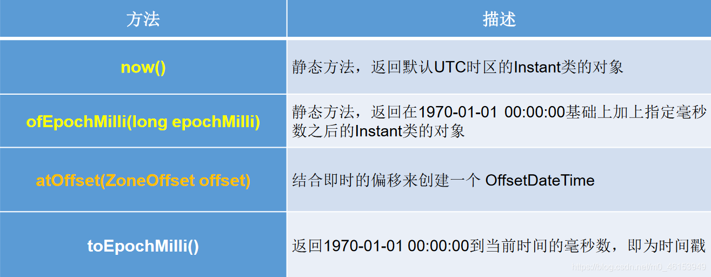
时间戳是指格林威治时间 1970 年 01 月 01 日 00 时 00 分 00 秒 (北京时间 1970 年 01 月 01 日 08 时 00 分 00 秒) 起至现在的总秒数。
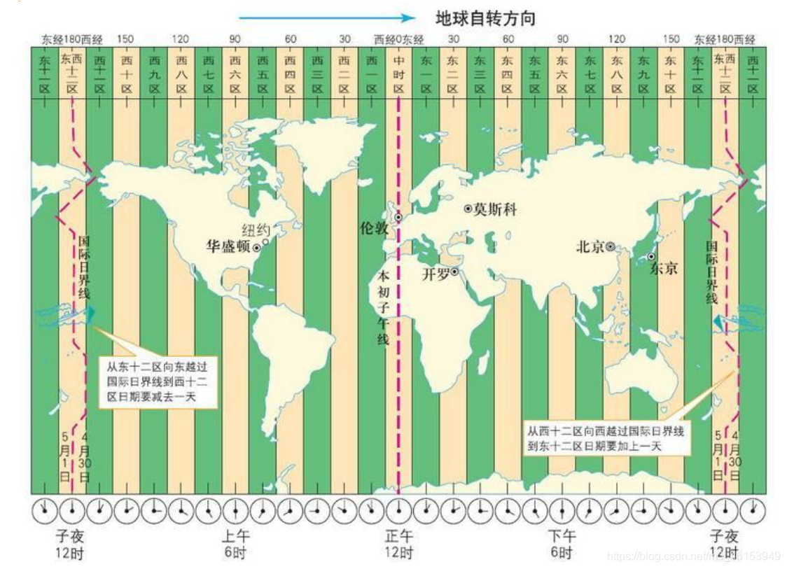
import org.junit.Test; | |
import java.time.*; | |
/** | |
* jdk 8 中日期时间 API 的测试 | |
*/ | |
public class JDK8DateTimeTest { | |
/** | |
* Instant 的使用 | |
*/ | |
@Test | |
public void test2(){ | |
//now (): 获取本初子午线对应的标准时间 | |
Instant instant = Instant.now(); | |
System.out.println(instant); //2020-05-10T09:55:55.561Z | |
// 添加时间的偏移量 | |
OffsetDateTime offsetDateTime = instant.atOffset(ZoneOffset.ofHours(8));// 东八区 | |
System.out.println(offsetDateTime); //2020-05-10T18:00:00.641+08:00 | |
//toEpochMilli (): 获取自 1970 年 1 月 1 日 0 时 0 分 0 秒（UTC）开始的毫秒数 ---> Date 类的 getTime () | |
long milli = instant.toEpochMilli(); | |
System.out.println(milli); //1589104867591 | |
//ofEpochMilli (): 通过给定的毫秒数，获取 Instant 实例 -->Date (long millis) | |
Instant instant1 = Instant.ofEpochMilli(1550475314878L); | |
System.out.println(instant1); //2019-02-18T07:35:14.878Z | |
} | |
} |
# 4.3、DateTimeFormatter 的使用
java.time.format.DateTimeFormatter类：该类提供了三种格式化方法：
- 预定义的标准格式。如：
ISO_LOCAL_DATE_TIME;ISO_LOCAL_DATE;ISO_LOCAL_TIME - 本地化相关的格式。如：
ofLocalizedDateTime(FormatStyle.LONG) - ** 自定义的格式。如：
ofPattern(“yyyy-MM-dd hh:mm:ss”)
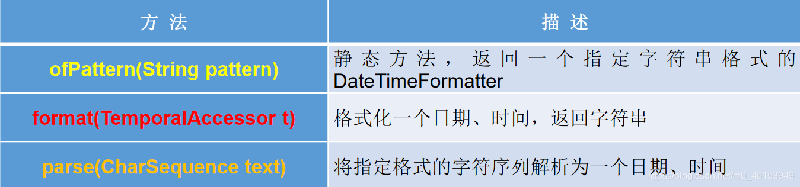
import org.junit.Test; | |
import java.time.*; | |
import java.time.format.DateTimeFormatter; | |
import java.time.format.FormatStyle; | |
import java.time.temporal.TemporalAccessor; | |
/** | |
* jdk 8 中日期时间 API 的测试 | |
*/ | |
public class JDK8DateTimeTest { | |
/** | |
* DateTimeFormatter: 格式化或解析日期、时间 | |
* 类似于 SimpleDateFormat | |
*/ | |
@Test | |
public void test3(){ | |
// 方式一：预定义的标准格式。如：ISO_LOCAL_DATE_TIME;ISO_LOCAL_DATE;ISO_LOCAL_TIME | |
DateTimeFormatter formatter = DateTimeFormatter.ISO_LOCAL_DATE_TIME; | |
// 格式化：日期 --> 字符串 | |
LocalDateTime localDateTime = LocalDateTime.now(); | |
String str1 = formatter.format(localDateTime); | |
System.out.println(localDateTime); | |
System.out.println(str1);//2020-05-10T18:26:40.234 | |
// 解析：字符串 --> 日期 | |
TemporalAccessor parse = formatter.parse("2020-05-10T18:26:40.234"); | |
System.out.println(parse); | |
// 方式二： | |
// 本地化相关的格式。如：ofLocalizedDateTime () | |
//FormatStyle.LONG/ FormatStyle.MEDIUM/ FormatStyle.SHORT : 适用于 LocalDateTime | |
DateTimeFormatter formatter1 = DateTimeFormatter.ofLocalizedDateTime(FormatStyle.LONG); | |
// 格式化 | |
String str2 = formatter1.format(localDateTime); | |
System.out.println(str2);//2020 年 5 月 10 日 下午 06 时 26 分 40 秒 | |
// 本地化相关的格式。如：ofLocalizedDate () | |
//FormatStyle.FULL/ FormatStyle.LONG/ FormatStyle.MEDIUM/ FormatStyle.SHORT : 适用于 LocalDate | |
DateTimeFormatter formatter2 = DateTimeFormatter.ofLocalizedDate(FormatStyle.MEDIUM); | |
// 格式化 | |
String str3 = formatter2.format(LocalDate.now()); | |
System.out.println(str3);//2020-5-10 | |
// 重点： 方式三：自定义的格式。如：ofPattern (“yyyy-MM-dd hh:mm:ss”) | |
DateTimeFormatter formatter3 = DateTimeFormatter.ofPattern("yyyy-MM-dd hh:mm:ss"); | |
// 格式化 | |
String str4 = formatter3.format(LocalDateTime.now()); | |
System.out.println(str4);//2020-05-10 06:26:40 | |
// 解析 | |
TemporalAccessor accessor = formatter3.parse("2020-05-10 06:26:40"); | |
System.out.println(accessor); | |
} | |
} |
# 4.4、其它日期时间相关 API 的使用
- ZoneId：该类中包含了所有的时区信息，一个时区的 ID，如 Europe/Paris
- ZonedDateTime：一个在 ISO-8601 日历系统时区的日期时间，如 2007-12-03T10:15:30+01:00Europe/Paris。
- 其中每个时区都对应着 ID，地区 ID 都为 “{区域}/{城市}” 的格式，例如：Asia/Shanghai 等
import org.junit.Test; | |
import java.time.*; | |
import java.util.Set; | |
/** | |
* jdk 8 中日期时间 API 的测试 | |
*/ | |
public class JDK8DateTimeTest { | |
@Test | |
public void test1(){ | |
//ZoneId: 类中包含了所有的时区信息 | |
// ZoneId 的 getAvailableZoneIds (): 获取所有的 ZoneId | |
Set<String> zoneIds= ZoneId.getAvailableZoneIds(); | |
for(String s: zoneIds) { | |
System.out.println(s); | |
} | |
// ZoneId 的 of (): 获取指定时区的时间 | |
LocalDateTime localDateTime= LocalDateTime.now(ZoneId.of("Asia/Tokyo")); | |
System.out.println(localDateTime); | |
//ZonedDateTime: 带时区的日期时间 | |
// ZonedDateTime 的 now (): 获取本时区的 ZonedDateTime 对象 | |
ZonedDateTime zonedDateTime= ZonedDateTime.now(); | |
System.out.println(zonedDateTime); | |
// ZonedDateTime 的 now (ZoneId id): 获取指定时区的 ZonedDateTime 对象 | |
ZonedDateTime zonedDateTime1= ZonedDateTime.now(ZoneId.of("Asia/Tokyo")); | |
System.out.println(zonedDateTime1); | |
} | |
} |
- Clock：使用时区提供对当前即时、日期和时间的访问的时钟。
- 持续时间：Duration，用于计算两个 “时间” 间隔
- 日期间隔：Period，用于计算两个 “日期” 间隔
- TemporalAdjuster : 时间校正器。有时我们可能需要获取例如：将日期调整到 “下一个工作日” 等操作。
- TemporalAdjusters : 该类通过静态方法 (firstDayOfXxx ()/lastDayOfXxx ()/nextXxx ()) 提供了大量的常用 TemporalAdjuster 的实现。
import java.time.Duration; | |
import java.time.LocalDateTime; | |
import java.time.LocalTime; | |
import org.junit.Test; | |
public class JDK8APITest { | |
@Test | |
public void test2(){ | |
//Duration: 用于计算两个 “时间” 间隔，以秒和纳秒为基准 | |
LocalTime localTime= LocalTime.now(); | |
LocalTime localTime1= LocalTime.of(15, 23, 32); | |
//between (): 静态方法，返回 Duration 对象，表示两个时间的间隔 | |
Duration duration= Duration.between(localTime1, localTime); | |
System.out.println(duration); | |
System.out.println(duration.getSeconds()); | |
System.out.println(duration.getNano()); | |
LocalDateTime localDateTime= LocalDateTime.of(2016, 6, 12, 15, 23, 32); | |
LocalDateTime localDateTime1= LocalDateTime.of(2017, 6, 12, 15, 23, 32); | |
Duration duration1= Duration.between(localDateTime1, localDateTime); | |
System.out.println(duration1.toDays()); | |
} | |
} | |
import java.time.Period; | |
import org.junit.Test; | |
public class JDK8APITest { | |
@Test | |
public void test3(){ | |
//Period: 用于计算两个 “日期” 间隔，以年、月、日衡量 | |
LocalDate localDate= LocalDate.now(); | |
LocalDate localDate1= LocalDate.of(2028, 3, 18); | |
Period period= Period.between(localDate, localDate1); | |
System.out.println(period); | |
System.out.println(period.getYears()); | |
System.out.println(period.getMonths()); | |
System.out.println(period.getDays()); | |
Period period1= period.withYears(2); | |
System.out.println(period1); | |
} | |
} |
# 4.4.1、参考：与传统日期处理的转换
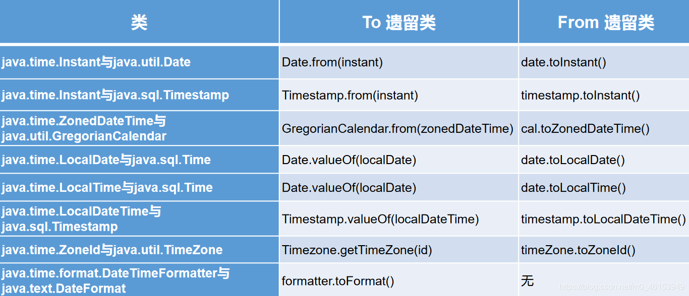
# 05、Java 比较器
# 5.1、概述
Java 中的对象，正常情况下，只能进行比较： == 或 != 。不能使用 > 或 < 的，但是在开发场景中，我们需要对多个对象进行排序，言外之意，就需要比较对象的大小。 如何实现？使用两个接口中的任何一个： Comparable 或 Comparator
- Java 实现对象排序的方式有两种：
- 自然排序：
java.lang.Comparable - 定制排序：
java.util.Comparator
- 自然排序：
# 5.2、Comparable 自然排序举例
import org.junit.Test; | |
import java.util.Arrays; | |
public class CompareTest { | |
/** | |
* Comparable 接口的使用举例： 自然排序 | |
* 1. 像 String、包装类等实现了 Comparable 接口，重写了 compareTo (obj) 方法，给出了比较两个对象大小的方式。 | |
* 2. 像 String、包装类重写 compareTo () 方法以后，进行了从小到大的排列 | |
* 3. 重写 compareTo (obj) 的规则： | |
* 如果当前对象 this 大于形参对象 obj，则返回正整数， | |
* 如果当前对象 this 小于形参对象 obj，则返回负整数， | |
* 如果当前对象 this 等于形参对象 obj，则返回零。 | |
* | |
*/ | |
@Test | |
public void test1(){ | |
String[] arr = new String[]{ "AA","CC","KK","MM","GG","JJ","DD"}; | |
Arrays.sort(arr); | |
System.out.println(Arrays.toString(arr)); | |
} | |
} |
# 5.3、自定义类实现 Comparable 自然排序
1、测试类
import org.junit.Test; | |
import java.util.Arrays; | |
public class CompareTest { | |
/** | |
* 4. 对于自定义类来说，如果需要排序，我们可以让自定义类实现 Comparable 接口，重写 compareTo (obj) 方法。 | |
* 在 compareTo (obj) 方法中指明如何排序 | |
*/ | |
@Test | |
public void test2(){ | |
Goods[] arr = new Goods[5]; | |
arr[0] = new Goods("lenovoMouse",34); | |
arr[1] = new Goods("dellMouse",43); | |
arr[2] = new Goods("xiaomiMouse",12); | |
arr[3] = new Goods("huaweiMouse",65); | |
arr[4] = new Goods("microsoftMouse",43); | |
Arrays.sort(arr); | |
System.out.println(Arrays.toString(arr)); | |
} | |
} |
2、Goods 类
/** | |
* 商品类 | |
*/ | |
public class Goods implements Comparable{ | |
private String name; | |
private double price; | |
public Goods() { | |
} | |
public Goods(String name, double price) { | |
this.name = name; | |
this.price = price; | |
} | |
public String getName() { | |
return name; | |
} | |
public void setName(String name) { | |
this.name = name; | |
} | |
public double getPrice() { | |
return price; | |
} | |
public void setPrice(double price) { | |
this.price = price; | |
} | |
@Override | |
public String toString() { | |
return "Goods{" + | |
"name='" + name + '\'' + | |
", price=" + price + | |
'}'; | |
} | |
// 指明商品比较大小的方式：按照价格从低到高排序，再按照产品名称从高到低排序 | |
@Override | |
public int compareTo(Object o) { | |
// System.out.println("**************"); | |
if(o instanceof Goods){ | |
Goods goods = (Goods)o; | |
// 方式一： | |
if(this.price > goods.price){ | |
return 1; | |
}else if(this.price < goods.price){ | |
return -1; | |
}else{ | |
// return 0; | |
return -this.name.compareTo(goods.name); | |
} | |
// 方式二： | |
// return Double.compare(this.price,goods.price); | |
} | |
// return 0; | |
throw new RuntimeException("传入的数据类型不一致！"); | |
} | |
} |
# 5.4、使用 Comparator 实现定制排序
import org.junit.Test; | |
import java.util.Arrays; | |
import java.util.Comparator; | |
/** | |
* 一、说明：Java 中的对象，正常情况下，只能进行比较：== 或！= 。不能使用 > 或 < 的 | |
* 但是在开发场景中，我们需要对多个对象进行排序，言外之意，就需要比较对象的大小。 | |
* 如何实现？使用两个接口中的任何一个：Comparable 或 Comparator | |
* | |
* 二、Comparable 接口与 Comparator 的使用的对比： | |
* Comparable 接口的方式一旦一定，保证 Comparable 接口实现类的对象在任何位置都可以比较大小。 | |
* Comparator 接口属于临时性的比较。 | |
*/ | |
public class CompareTest { | |
/** | |
* Comparator 接口的使用：定制排序 | |
* 1. 背景： | |
* 当元素的类型没有实现 java.lang.Comparable 接口而又不方便修改代码， | |
* 或者实现了 java.lang.Comparable 接口的排序规则不适合当前的操作， | |
* 那么可以考虑使用 Comparator 的对象来排序 | |
* 2. 重写 compare (Object o1,Object o2) 方法，比较 o1 和 o2 的大小： | |
* 如果方法返回正整数，则表示 o1 大于 o2； | |
* 如果返回 0，表示相等； | |
* 返回负整数，表示 o1 小于 o2。 | |
*/ | |
@Test | |
public void test3(){ | |
String[] arr = new String[]{ "AA","CC","KK","MM","GG","JJ","DD"}; | |
Arrays.sort(arr,new Comparator(){ | |
// 按照字符串从大到小的顺序排列 | |
@Override | |
public int compare(Object o1, Object o2) { | |
if(o1 instanceof String && o2 instanceof String){ | |
String s1 = (String) o1; | |
String s2 = (String) o2; | |
return -s1.compareTo(s2); | |
} | |
// return 0; | |
throw new RuntimeException("输入的数据类型不一致"); | |
} | |
}); | |
System.out.println(Arrays.toString(arr)); | |
} | |
@Test | |
public void test4(){ | |
Goods[] arr = new Goods[6]; | |
arr[0] = new Goods("lenovoMouse",34); | |
arr[1] = new Goods("dellMouse",43); | |
arr[2] = new Goods("xiaomiMouse",12); | |
arr[3] = new Goods("huaweiMouse",65); | |
arr[4] = new Goods("huaweiMouse",224); | |
arr[5] = new Goods("microsoftMouse",43); | |
Arrays.sort(arr, new Comparator() { | |
// 指明商品比较大小的方式：按照产品名称从低到高排序，再按照价格从高到低排序 | |
@Override | |
public int compare(Object o1, Object o2) { | |
if(o1 instanceof Goods && o2 instanceof Goods){ | |
Goods g1 = (Goods)o1; | |
Goods g2 = (Goods)o2; | |
if(g1.getName().equals(g2.getName())){ | |
return -Double.compare(g1.getPrice(),g2.getPrice()); | |
}else{ | |
return g1.getName().compareTo(g2.getName()); | |
} | |
} | |
throw new RuntimeException("输入的数据类型不一致"); | |
} | |
}); | |
System.out.println(Arrays.toString(arr)); | |
} |
Comparable 接口与 Comparator 的使用的对比 ：
- Comparable 接口的方式一旦一定，保证 Comparable 接口实现类的对象在任何位置都可以比较大小。
- Comparator 接口属于临时性的比较。
# 06、System 类、Math 类、BigInteger 与 BigDecimal
# 6.1、System 类
System类代表系统，系统级的很多属性和控制方法都放置在该类的内部。该类位于java.lang包。由于该类的构造器是
private的，所以无法创建该类的对象，也就是无法实例化该类。其内部的成员变量和成员方法都是static的，所以也可以很方便的进行调用。成员变量
System类内部包含in、out和err三个成员变量，分别代表标准输入流 (键盘输入)，标准输出流 (显示器) 和标准错误输出流 (显示器)。
成员方法
native long currentTimeMillis()： 该方法的作用是返回当前的计算机时间，时间的表达格式为当前计算机时间和 GMT 时间 (格林威治时间) 1970 年 1 月 1 号 0 时 0 分 0 秒所差的毫秒数。void exit(int status)： 该方法的作用是退出程序。其中 status 的值为 0 代表正常退出，非零代表异常退出。使用该方法可以在图形界面编程中实现程序的退出功能等。void gc()： 该方法的作用是请求系统进行垃圾回收。至于系统是否立刻回收，则取决于系统中垃圾回收算法的实现以及系统执行时的情况。StringgetProperty(String key)： 该方法的作用是获得系统中属性名为 key 的属性对应的值。系统中常见的属性名以及属性的作用如下表所示：
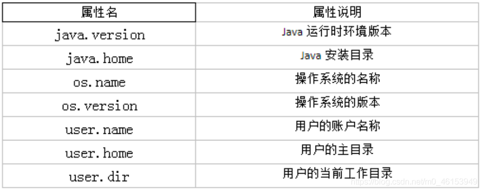
import org.junit.Test; | |
/** | |
* 其他常用类的使用 | |
* 1.System | |
* 2.Math | |
* 3.BigInteger 和 BigDecimal | |
*/ | |
public class OtherClassTest { | |
@Test | |
public void test1() { | |
String javaVersion = System.getProperty("java.version"); | |
System.out.println("java的version:" + javaVersion); | |
String javaHome = System.getProperty("java.home"); | |
System.out.println("java的home:" + javaHome); | |
String osName = System.getProperty("os.name"); | |
System.out.println("os的name:" + osName); | |
String osVersion = System.getProperty("os.version"); | |
System.out.println("os的version:" + osVersion); | |
String userName = System.getProperty("user.name"); | |
System.out.println("user的name:" + userName); | |
String userHome = System.getProperty("user.home"); | |
System.out.println("user的home:" + userHome); | |
String userDir = System.getProperty("user.dir"); | |
System.out.println("user的dir:" + userDir); | |
} | |
} |
# 6.2、Math 类
java.lang.Math提供了一系列静态方法用于科学计算。其方法的参数和返回值类型一般为double型。
- abs 绝对值
- acos,asin,atan,cos,sin,tan 三角函数
- sqrt 平方根
- pow (double a,doble b) a 的 b 次幂
- log 自然对数
- exp e 为底指数
- max(double a,double b)
- min(double a,double b)
- random () 返回 0.0 到 1.0 的随机数
- long round (double a) double 型数据 a 转换为 long 型（四舍五入）
- toDegrees (double angrad) 弧度 —> 角度
- toRadians (double angdeg) 角度 —> 弧度
# 6.3、BigInteger 与 BigDecimal
Integer类作为int的包装类，能存储的最大整型值为2^31 -1，Long类也是有限的，最大为2^63 -1。如果要表示再大的整数，不管是基本数据类型还是他们的包装类都无能为力，更不用说进行运算了。java.math包的BigInteger可以表示不可变的任意精度的整数。BigInteger提供所有 Java 的基本整数操作符的对应物，并提供java.lang.Math的所有相关方法。另外，BigInteger还提供以下运算：模算术、GCD 计算、质数测试、素数生成、位操作以及一些其他操作。- 构造器
BigInteger(String val)：根据字符串构建BigInteger对象
- 常用方法
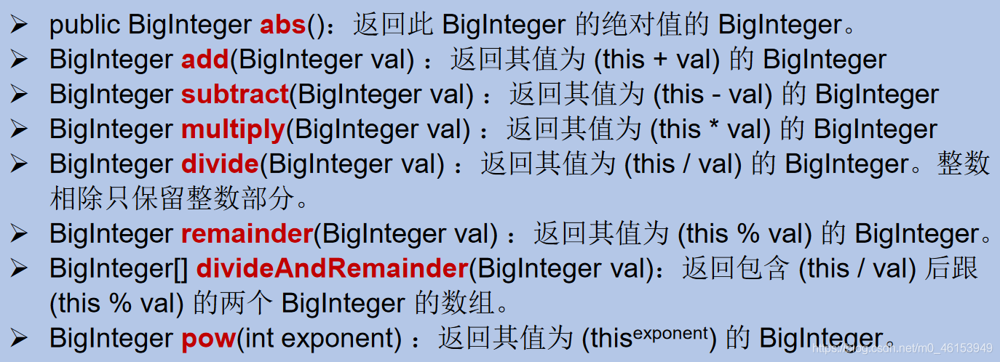
- 一般的 Float 类和 Double 类可以用来做科学计算或工程计算，但 在商业计算中，要求数字精度比较高，故用到
java.math.BigDecimal类 。 - BigDecimal 类支持不可变的、任意精度的有符号十进制定点数。
- 构造器
public BigDecimal(double val)public BigDecimal(String val)
- 常用方法
public BigDecimal add(BigDecimal augend)public BigDecimal subtract(BigDecimal subtrahend)public BigDecimal multiply(BigDecimal multiplicand)public BigDecimal divide(BigDecimal divisor, int scale, int roundingMode)
import org.junit.Test; | |
import java.math.BigDecimal; | |
import java.math.BigInteger; | |
/** | |
* 其他常用类的使用 | |
* 1.System | |
* 2.Math | |
* 3.BigInteger 和 BigDecimal | |
*/ | |
public class OtherClassTest { | |
@Test | |
public void test2() { | |
BigInteger bi = new BigInteger("1243324112234324324325235245346567657653"); | |
BigDecimal bd = new BigDecimal("12435.351"); | |
BigDecimal bd2 = new BigDecimal("11"); | |
System.out.println(bi); | |
// System.out.println(bd.divide(bd2)); | |
System.out.println(bd.divide(bd2, BigDecimal.ROUND_HALF_UP)); | |
System.out.println(bd.divide(bd2, 25, BigDecimal.ROUND_HALF_UP)); | |
} | |
} |